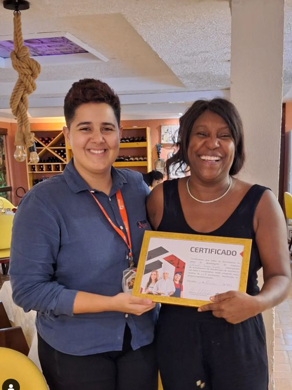
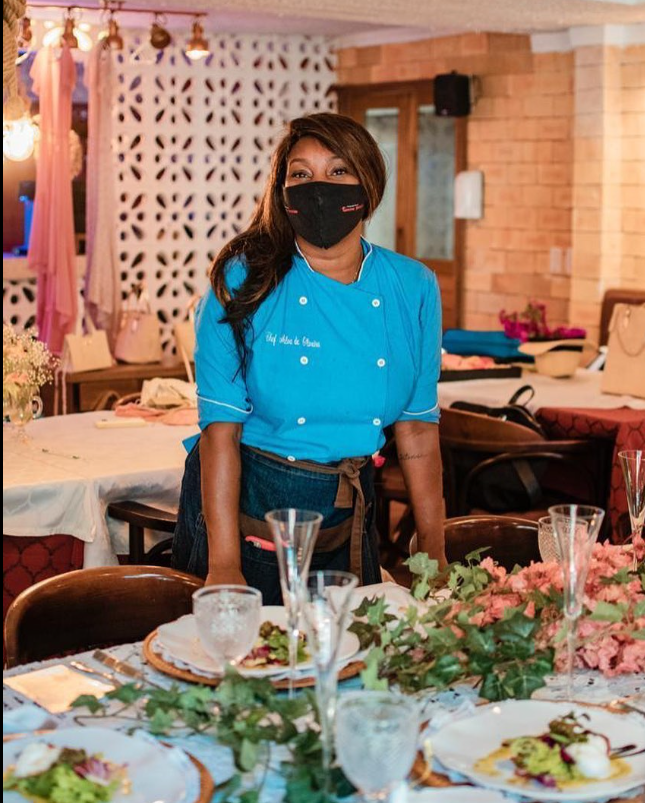
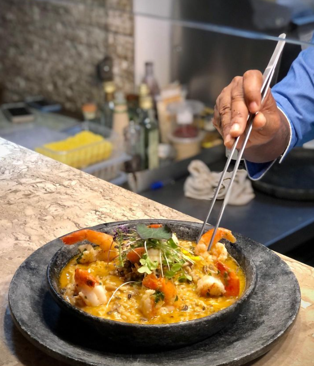
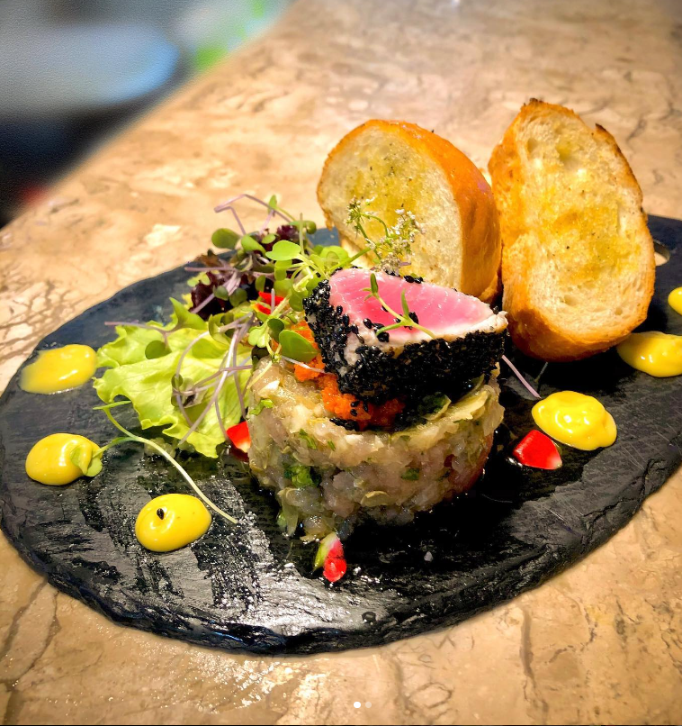

Chef Nalva
Fundadora do Taverna Paradiso, Nalva é uma chef brasileira, especialista em comida italiana. Mãe de dois filhos, ela traz sua paixão pela culinária autêntica para nosso restaurante.
Galeria de Fotos



